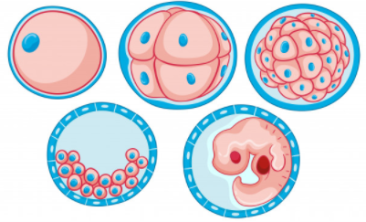

Signaling Pathways in Embryonic Development

| The formation of a complex multicellular organism from a single cell is one of the most amazing processes of biology. Embryonic development is characterized by the careful regulation of cellular behaviors such that cells proliferate, migrate, differentiate, and form tissues at the correct place and time. These processes are genetically controlled and depend both on the history of cells, their lineage, and on the activities of signaling pathways, which coordinate the cell interactions leading to organogenesis. |
Let's find out more about signaling pathways...
Are you ready?